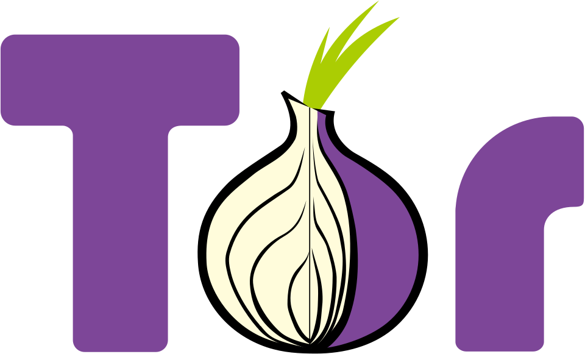
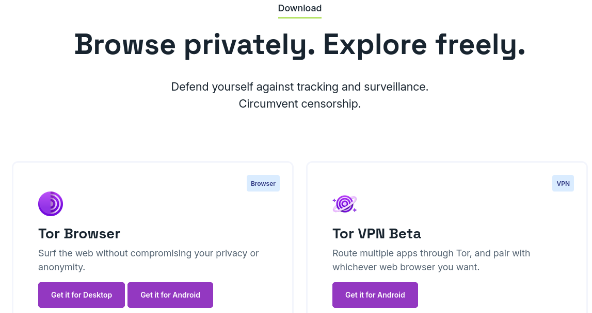
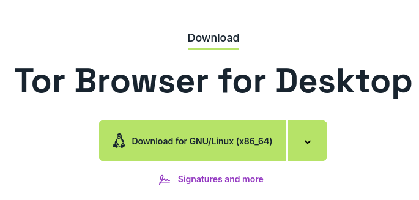
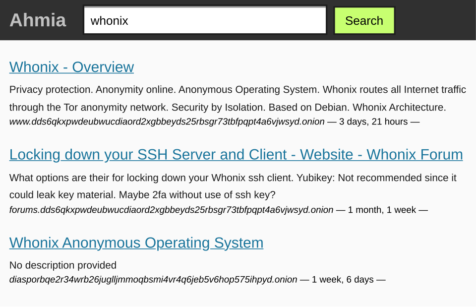

Created by Nymyh - License AGPLv3 | Content License

Welcome to this guide on how to install and configure the Tor Browser, which also includes recommendations, websites, and services you can use within the Tor Browser.
Before you begin!This guide is for Linux. I know that many Linux distributions already have the Tor Browser package in their repositories. If you're not sure, you can find that information by searching in your browser for “package search” along with the name of your distribution.
If it doesn't appear, you can use Flatpak to install it:
flatpak install flathub org.torproject.torbrowser-launcher
Obviously, you need to have Flatpak installed and its repository added; you can find it by searching for “Flatpak.” in your browser. They have an installation guide.So? What's the point of this guide when there are so many ways to install the Tor Browser?
Good question. The answer is that I believe the best way to install Tor Browser is through its official website. There, they offer the latest version of the browser: Tor 15.0.25, along with its alpha version. In this case, we'll use the stable version: Tor 15.0.25.

First, you need to go to the official Tor Browser website. Here's the link:
https://download.torproject.org/ --- COPY AND PASTE
As you can see in the image, several options appear, but the one you should select is “Tor Browser: Get for Desktop.”

If your computer is a 32-bit x86 system with instructions specific to more modern processors, click the download arrow and select i686.
Now, the next step is very simple. Just unzip the file; you can place the folder wherever you like.
Finally, open the folder, and you're all set! Inside, you'll find the Tor Browser .desktop file, which will open the browser when you click on it. In some cases, people add the .desktop file to their application menu or desktop; that's also up to you, and it doesn't affect how the browser works.
Before you click the purple button to connect, I recommend configuring your browser. First, tap the three lines in the upper-right corner of your screen—they're the same as in Mozilla Firefox (just so you know).
A menu will appear, and well, since Tor Browser uses Mozilla Firefox, a lot of things are obvious. If you've never used Mozilla Firefox—which would be strange—a menu will appear, and you should look for the option that says “Settings.”
When you click, go to the “Privacy and Security” section—or simply “Privacy”—which is located on the left.
Now go to where it says: Security Level Security, and by default the current level of security is always normal, click on the option to change the level of security and put: the safest.
The browser will restart; this is normal. Once it restarts, go back to Settings, Privacy and Security, and where you previously enabled “Safest Mode,” you'll now see: Protection against misleading content and harmful software. Check both boxes; the third one is already checked by default, so leave it as is.
The option you selected protects against malware and blocks misleading content.Now go back to Settings, tap “Search/Search Engine,” and change the option from DuckDuckGo to Startpage (.onion)—this change doesn't require a restart. All done!
WELCOME TO TOR BROWSER!I'd also like to add that, if you'd like, I recommend enabling extensions and themes. NoScript will be enabled; click the three dots next to NoScript and select “Manage.” Where it says “Toolbar button,” click “Show.” This will help you when you want a page you're visiting to be able to load JavaScript.
If you use the Tor Browser to search for content not indexed by standard search engines, you can use Ahmia (note: I neither endorse nor recommend using the wonderful Tor technology to search for illegal or problematic content).

If you want to watch YouTube using the Tor Browser, I recommend Invidious, some of whose instances have .onion versions. Some websites that require an account or collect a lot of user data have community-built versions: Invidious for YouTube, SafeTwitch for Twitch, and others like them.
Well then...
Thank you for reading the guide; I hope it was helpful. If I find any errors in it, I'll update it.